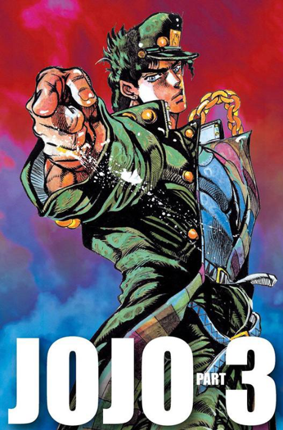
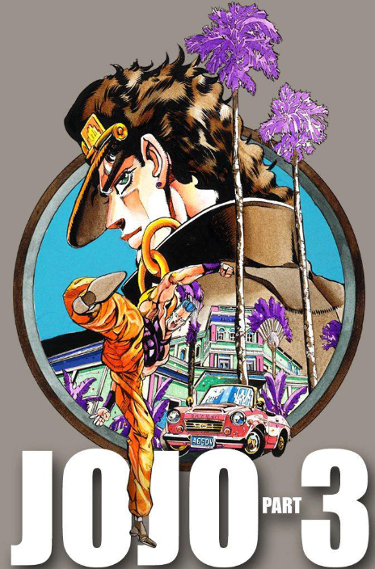
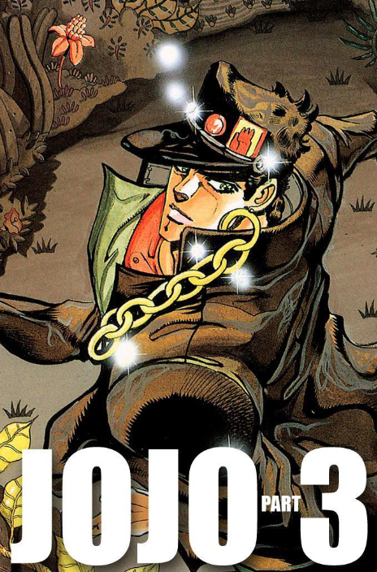
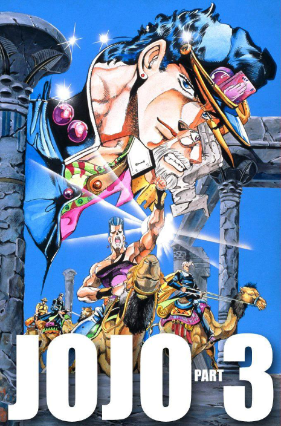

Stardust Crusaders – Volume 13

Stardust Crusaders – Volume 14

Stardust Crusaders – Volume 15
Stardust Crusaders – Volume 16
Stardust Crusaders – Volume 17

Stardust Crusaders – Volume 18
Stardust Crusaders – Volume 19

Stardust Crusaders – Volume 20

Stardust Crusaders – Volume 21

Stardust Crusaders – Volume 22

Stardust Crusaders – Volume 23

Stardust Crusaders – Volume 24

Stardust Crusaders – Volume 25

Stardust Crusaders – Volume 26

Stardust Crusaders – Volume 27

Stardust Crusaders – Volume 28